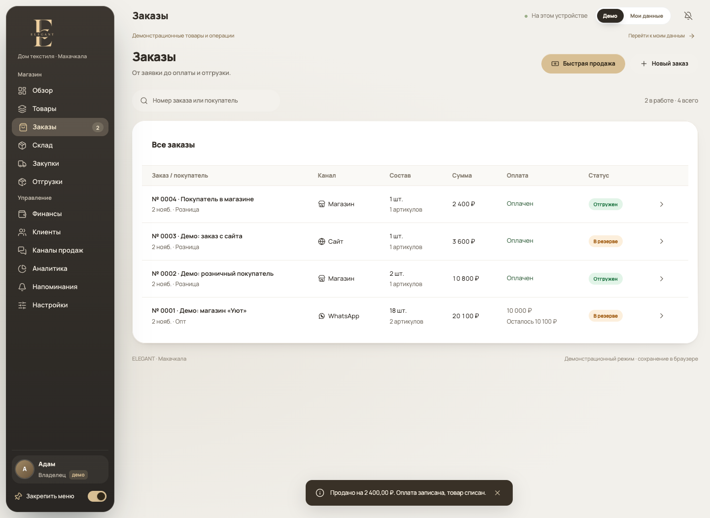
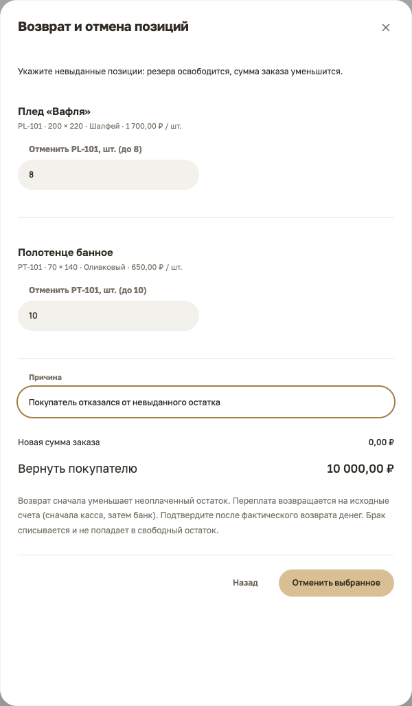
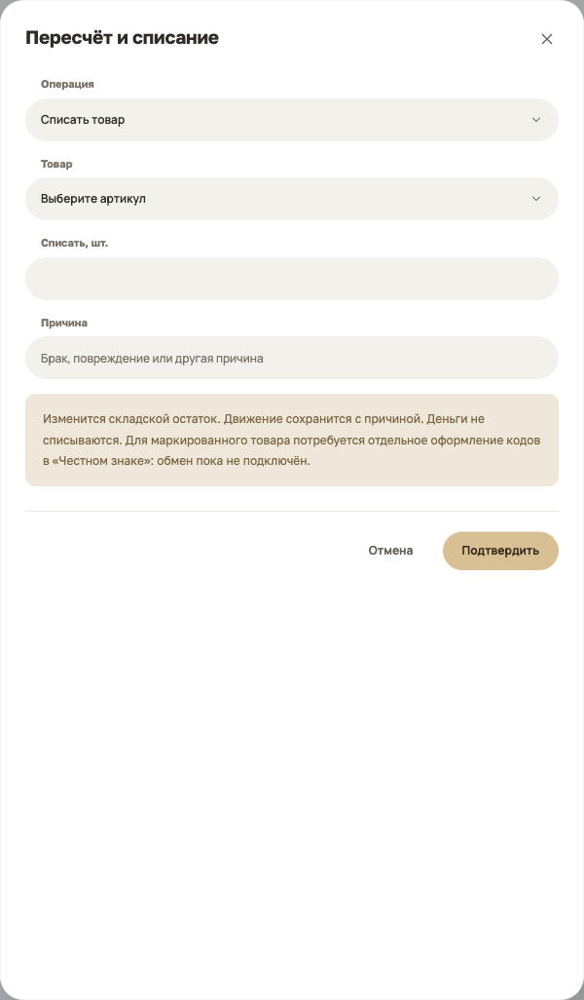
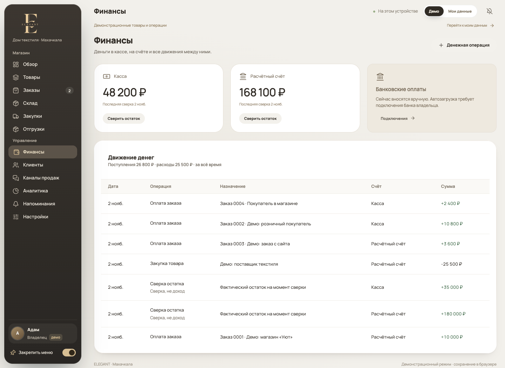
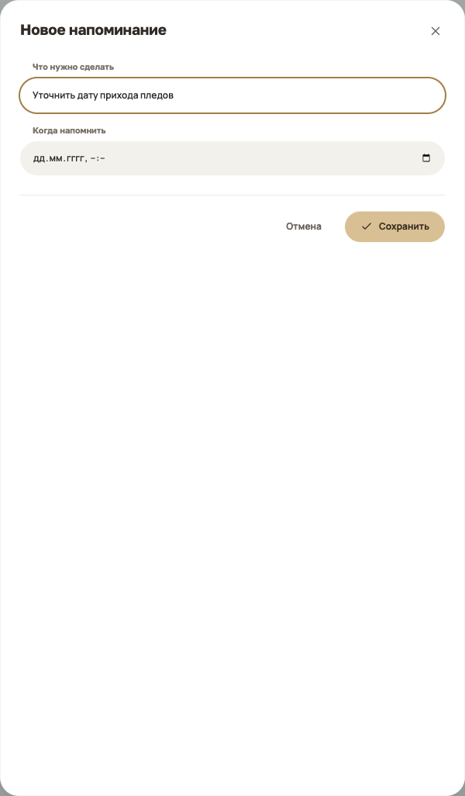

Дом текстиля
Памятка по CRM
Как работать в CRM
Начните с режима «Мои данные». Скриншоты ниже сняты в «Демо»: это учебные товары и суммы.
Нажмите на любой скриншот, чтобы рассмотреть его крупнее. Все суммы и покупатели в примерах демонстрационные.
Выберите рабочий режим
Вверху справа нажмите «Мои данные». «Демо» оставьте для тренировки.
Добавьте товары и остатки
В «Товарах» заведите модели и цены. В «Складе» проверяйте количество и резервы.
Продавайте и сохраняйте копию
Для продажи на месте используйте «Быструю продажу». В конце дня скачивайте резервную копию.
Сейчас данные хранятся в этом браузере на этом устройстве. Телефон и ноутбук автоматически не синхронизируются.
Добавить товар и фотографию
Товары → Добавить товар
Название и фото
Нажмите «Добавить фото», выберите JPG, PNG или WebP до 10 МБ. Введите название модели и категорию.
Размер, цвет и цены
Укажите вариант, закупочную цену, опт и розницу. Для другого размера или цвета нажмите «Ещё размер или цвет».
Создать товар
У каждого варианта появится свой артикул. Для правки найдите товар и нажмите значок карандаша; в карточках нажмите на сам товар.
«Уже на складе» - только фактически имеющееся количество при первом занесении. Для новой поставки оставьте 0 и оформите закупку: не вносите одну партию дважды.
Заказать товар у поставщика
Закупки → Новая закупка
Выберите точный вариант
Проверьте артикул, размер и цвет. Введите поставщика и количество.
Укажите стоимость и срок
Цена закупки указывается за одну штуку. Выберите ожидаемую дату и счёт, с которого заплатили.
Сохраните после оплаты
CRM запишет полную предоплату за товар. Количество появится «В пути», но ещё не в свободном остатке.
Закупка в текущей версии предполагает полную предоплату. Доставка записывается отдельно при приёмке. Разные артикулы оформляйте отдельными закупками.
Принять поставку, даже частями
Закупки → Принять товар
Посчитайте полученное
Разделите годный товар и брак. В примере: 10 годных + 2 бракованных из 30 заказанных.
Запишите доставку
Укажите стоимость доставки именно этой части, счёт оплаты и причину брака.
Сохраните приёмку
На склад попадут 10 годных. Брак спишется. Остальные 18 останутся в пути, если поставку не закрывать.
Галочку «Закрыть поставку…» ставьте, только если остаток уже не придёт. Недопоставка создаст претензию. Деньги от поставщика отмечайте кнопкой «Возврат поставщика» после их фактического получения.
Продать в одном окне
Обзор, Товары, Склад или Заказы → Быстрая продажа
Найдите и выберите товар
Введите название или артикул. Нажмите на найденный товар, проверьте количество и цену: розница или опт.
Получите деньги
Выберите «Наличными» или «На счёт». Убедитесь, что деньги действительно поступили.
Выдайте товар и завершите
Нажмите «Оплата получена · завершить продажу». Заказ, оплата и списание со склада сохранятся вместе.
Не создавайте после этого вторую продажу или отдельное поступление в финансах. Терминал, касса и маркировка пока не подключены: CRM не проводит платёж и не оформляет фискальный чек.
Записать заказ на потом
Заказы → Новый заказ
Покупатель и источник
Введите покупателя, укажите источник: магазин, WhatsApp, сайт или Instagram. Выберите оптовую или розничную цену.
Состав и получение
Выберите артикул и количество. Добавьте позиции при необходимости, укажите доставку или самовывоз.
Сохраните заказ
Товары сразу попадут в резерв. Деньги и выдача отмечаются отдельно в карточке заказа.
Источник заказа - ручная отметка. Сообщения и заявки из WhatsApp, Instagram и сайта пока не приходят автоматически.
Принять оплату и выдать заказ
Заказы → нажмите номер заказа
Принять оплату
Введите фактически полученную сумму и выберите счёт. Можно внести часть оплаты: остаток долга останется виден.
Отгрузить
Укажите количество, которое действительно передаёте. Для частичной выдачи уменьшите количества, для невыдаваемых позиций поставьте 0.
Проверьте историю
В карточке видны платежи и отгрузки. Полная оплата сама по себе не списывает товар со склада.
Для покупателя, который забирает и оплачивает всё сразу, удобнее «Быстрая продажа». Обычный заказ нужен для резерва, долга, доставки и частичной выдачи.
Как выглядит список заказов

Вернуть товар или отменить остаток
Заказы → карточка нужного заказа
Вернули уже выданное
Нажмите «Оформить возврат». Укажите количество только возвращаемых позиций и причину.
Отметьте брак
В поле «Из них брак» укажите повреждённую часть возврата. Она спишется; годные вещи вернутся в свободный остаток.
Проверьте деньги
CRM сначала уменьшит неоплаченный остаток. Если возникла переплата, покажет сумму к возврату. Подтверждайте после возврата денег.
Если товар ещё не выдан, используйте «Отменить невыданное»: выберите количество и причину. Освободится резерв, сумма заказа уменьшится. Уже выданные вещи останутся в истории.
Экран отмены невыданного остатка

Проверить склад
Склад
На складе
Физическое количество, включая зарезервированные вещи.
В резерве и свободно
Резерв занят заказами. Свободно - то, что можно продать сейчас. «В пути» учитывается отдельно до приёмки.
Пересчитать или списать
Нажмите «Пересчитать / списать», выберите операцию, товар, количество и причину. Изменение останется в истории склада.
При пересчёте вводите фактический общий остаток, а не разницу. При списании - количество списываемых вещей. Продажи проводите через продажу, поступления - через приёмку.
Экран пересчёта и списания

Записать расход и проверить деньги
Финансы → Денежная операция
Выберите вид операции
«Расход» - аренда, упаковка и другие траты. «Перевод между своими счетами» - перемещение денег между кассой и банком.
Заполните детали
Укажите сумму, счёт, дату, статью расхода и понятное назначение. Нажмите «Сохранить».
Сверьте остатки
В разделе «Финансы» отдельно показаны касса и расчётный счёт. Для начального остатка или расхождения используйте сверку.
Оплату клиента записывайте в его заказе или быстрой продаже. Повторное внесение через «Прочее поступление» удвоит деньги. Суммы в CRM заполняются вручную, банковской синхронизации пока нет.
Где смотреть кассу и расчётный счёт

Скачать отчёт за месяц
Аналитика → Месяц → Скачать отчёт
Выберите месяц
Откройте «Аналитику» и нужный месяц. Текущий месяц ещё не закончен, поэтому сравнение с прошлым может быть неполным.
Посмотрите результат
Проверьте выручку, себестоимость, расходы, прибыль и товары. Выручка считается по отгрузкам; поступление денег - отдельный показатель.
Скачайте отчёт
Нажмите «Скачать отчёт». Сохранится HTML-файл, который открывается в браузере и может быть распечатан в PDF.
Отчёт отражает только внесённые в CRM операции. Текущие остатки и долги могут показываться на дату формирования - смотрите подписи. Это управленческий отчёт, он не заменяет налоговую отчётность.
Сохранить данные магазина
Настройки → Данные и копии
Скачать данные
Нажмите кнопку «Скачать данные». Сохраните файл JSON в надёжное место вне браузера.
Делать копию регулярно
Скачивайте её в конце рабочего дня, перед очисткой браузера или переносом на другой компьютер.
Восстановить при необходимости
Выберите нужный режим, затем «Выбрать файл копии». Проверьте состав и подтвердите замену данных.
Восстановление заменяет данные выбранного режима, а не объединяет их. Сначала скачайте текущую копию. Автоматического резервирования, синхронизации и отдельных прав менеджера пока нет.
На телефоне и с напоминаниями
Те же разделы, компактный экран
Откройте меню
Нажмите кнопку с буквой E вверху. В заказах сумма, долг и статус видны в карточке; страницу можно прокрутить.
Поставьте напоминание
«Напоминания» → «Напоминание»: напишите задачу, выберите дату и время, сохраните.
Включите звук
Нажмите колокольчик вверху или откройте «Настройки» → «Звуки и уведомления». CRM должна оставаться открытой.
Пока нет сервера, на телефоне будет свой набор данных. Для единого учёта работайте на основном устройстве. Импорт копии - перенос, а не совместная синхронизация.
Окно нового напоминания
